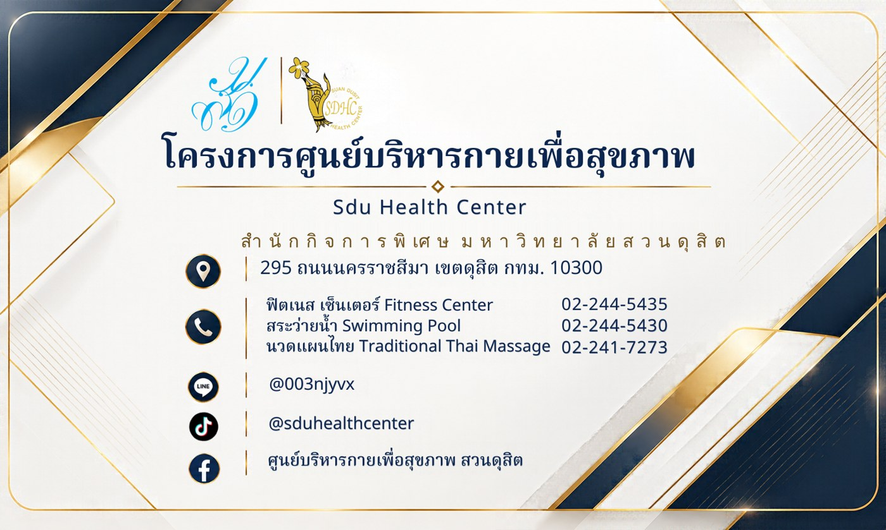

สื่อประชาสัมพันธ์ศูนย์บริหารกายเพื่อสุขภาพ
งานออกแบบสื่อประชาสัมพันธ์ของศูนย์บริหารกายเพื่อสุขภาพ มหาวิทยาลัยสวนดุสิต เพื่อเผยแพร่ข้อมูลบริการและช่องทางติดต่อ โดยใช้เทคโนโลยี Generative AI ช่วยในการออกแบบ
ผลงานระหว่างการฝึกงาน Gen AI Assisted